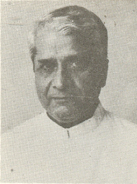
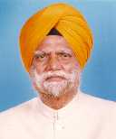
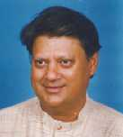
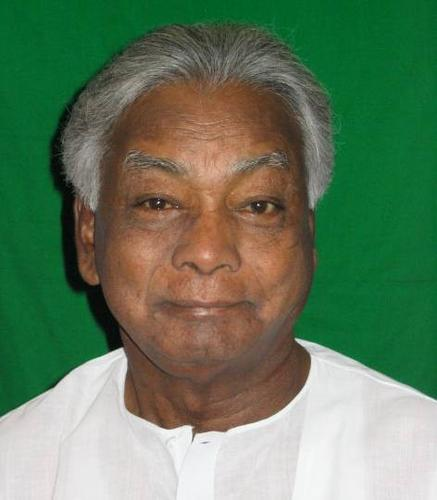
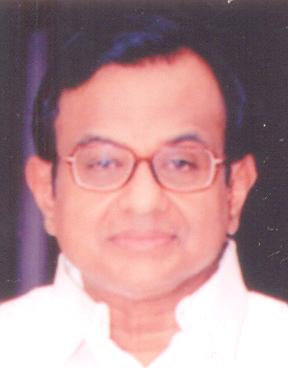
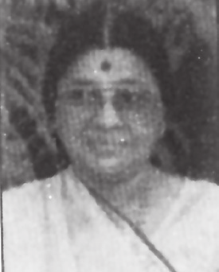

1_Upload_1579.pdf

आदेश की तिथि: १० फ़रवरी १९९५
आदेश प्रकार:विभाग में बदलाव
पृष्ठ1/1

सभी पृष्ठ

दिनेश सिंह
त्याग किया:
विदेश मंत्रालय[कैबिनेट मंत्री]
ग्रहण किया:

प्रणब मुखर्जी
त्याग किया:
वाणिज्य मंत्रालय[कैबिनेट मंत्री]
ग्रहण किया:

अजीत सिंह
ग्रहण किया:
खाद्य मंत्रालय[कैबिनेट मंत्री]

बूटा सिंह
ग्रहण किया:
नागरिक आपूर्ति मंत्रालय[कैबिनेट मंत्री]
उपभोक्ता मामले, खाद्य और सार्वजनिक वितरण मंत्रालय[कैबिनेट मंत्री]

माधवराव सिंधिया
ग्रहण किया:
मानव संसाधन विकास मंत्रालय[कैबिनेट मंत्री]
पी. ए. संगमा
त्याग किया:
श्रम मंत्रालय[राज्य मंत्री (स्वतंत्र प्रभार)]
ग्रहण किया:

जी. वेंकटस्वामी
त्याग किया:
कपड़ा मंत्रालय[राज्य मंत्री (स्वतंत्र प्रभार)]
ग्रहण किया:

पी. चिदंबरम
ग्रहण किया:
वाणिज्य मंत्रालय[राज्य मंत्री (स्वतंत्र प्रभार)]

मातंग सिंह
ग्रहण किया:
संसदीय कार्य मंत्रालय[राज्य मंत्री]
प्रेम खांडू कहानी
कायम है:
शहरी विकास मंत्रालय[राज्य मंत्री]
जल संसाधन मंत्रालय[राज्य मंत्री]

पी. वी. रंगैया नायडू
त्याग किया:
बिजली मंत्रालय[राज्य मंत्री]
ग्रहण किया:

उर्मिलाबेन चिमनभाई पटेल
ग्रहण किया:
बिजली मंत्रालय[राज्य मंत्री]